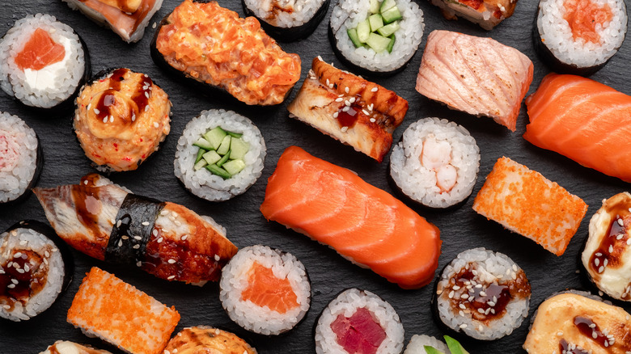
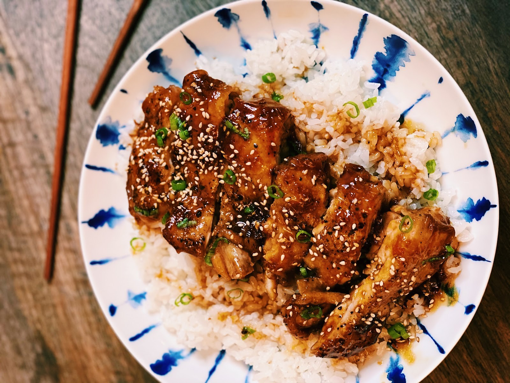
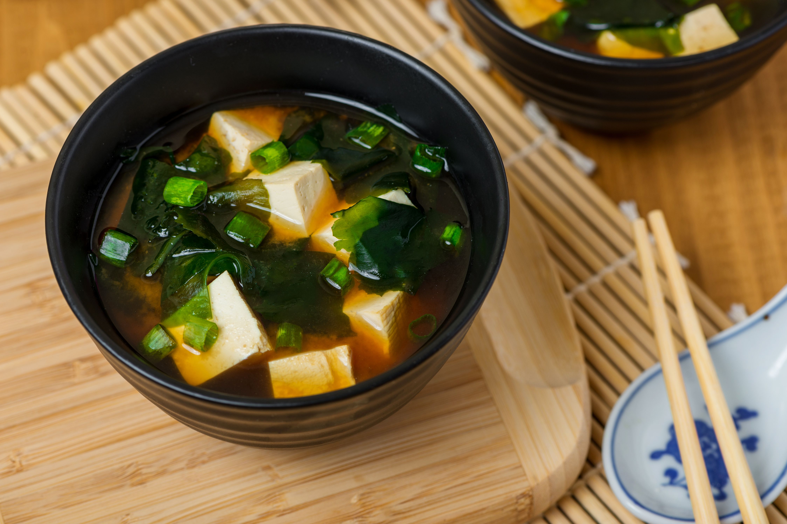

A traditional Japanese dish made with vinegared rice, seafood, and vegetables.

A popular Japanese noodle soup dish consisting of wheat noodles, broth, and toppings.

Lightly battered and deep-fried seafood or vegetables, often served with dipping sauce.

A cooking technique where foods are grilled or broiled with a glaze of soy sauce, mirin, and sugar.

A traditional Japanese soup made from miso paste, tofu, and seaweed.